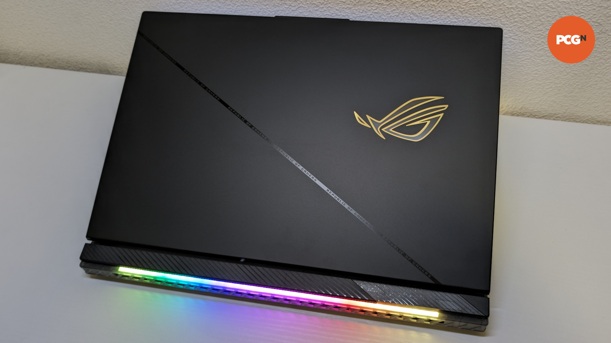
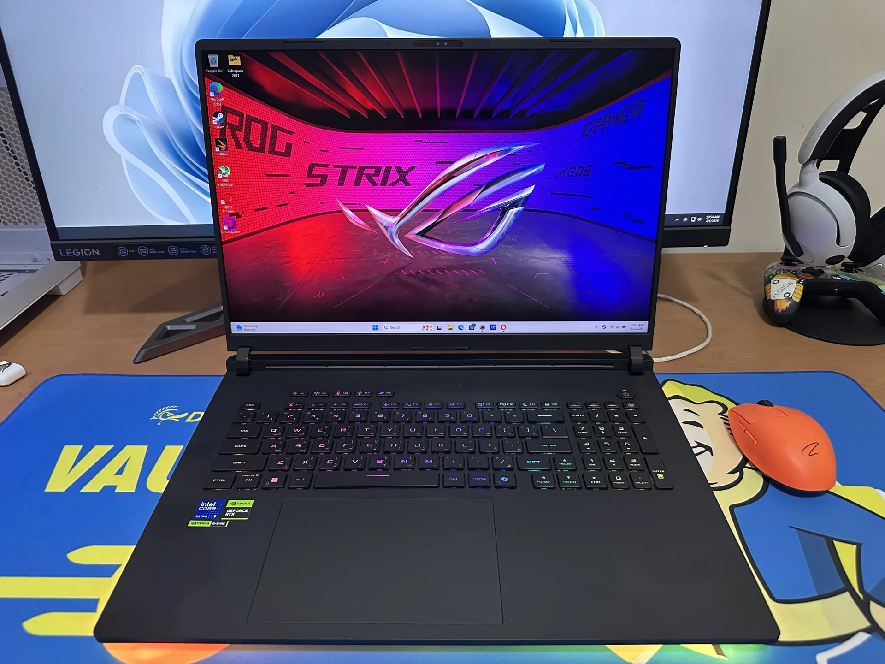
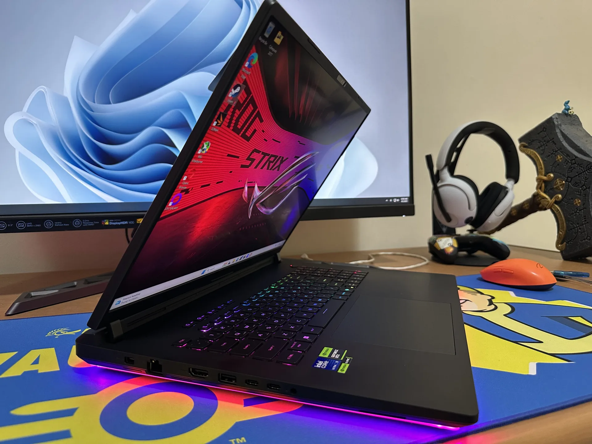
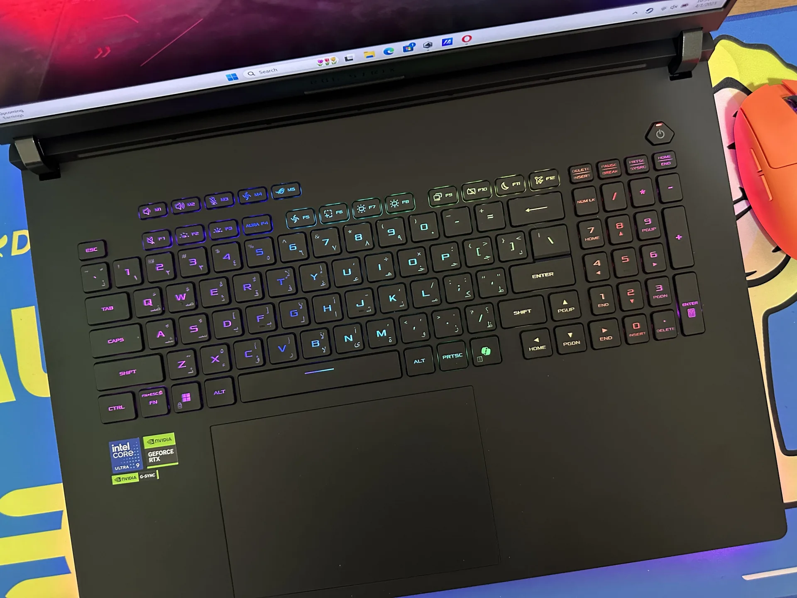
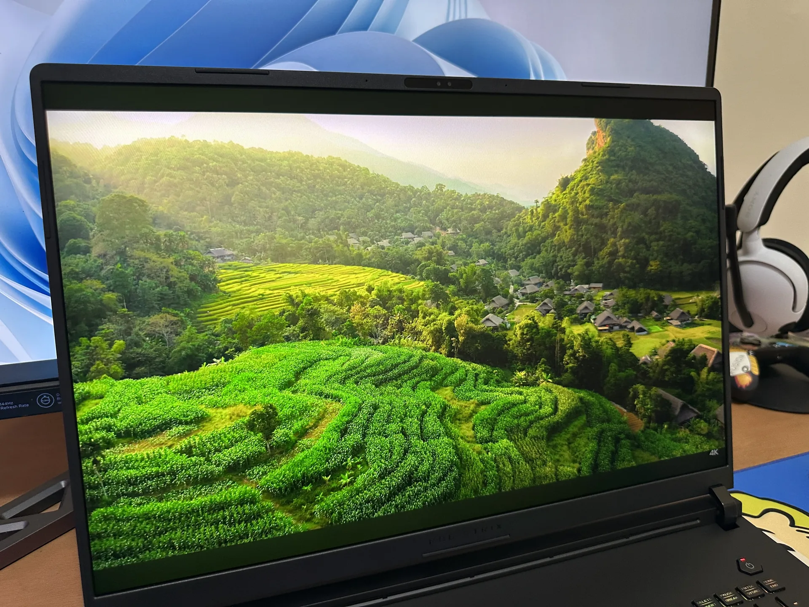
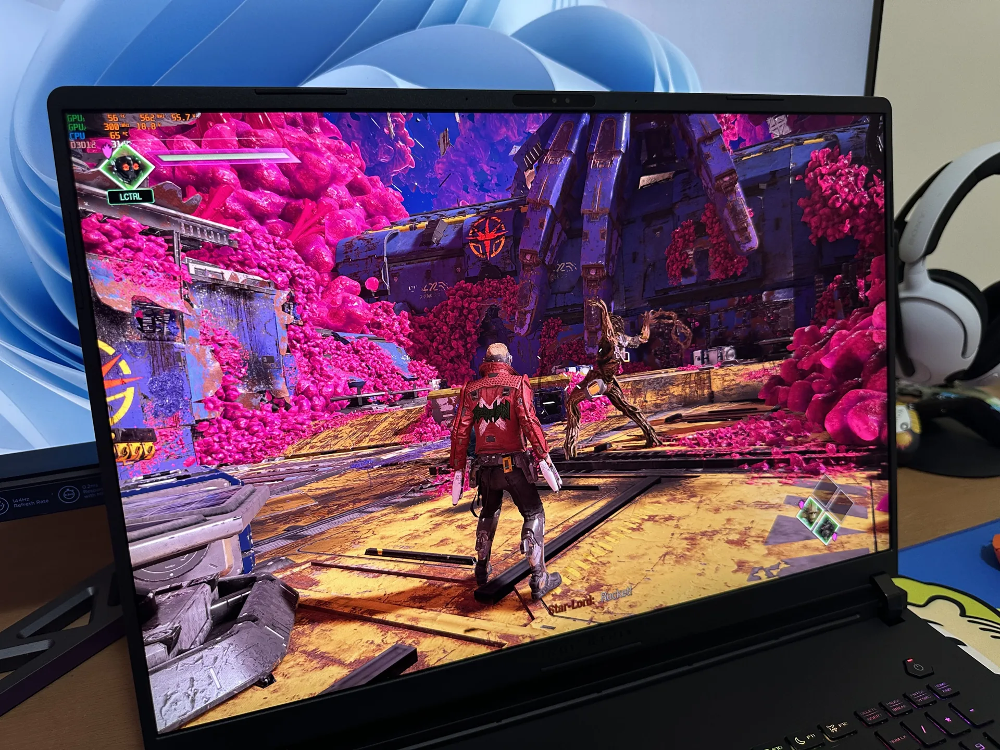
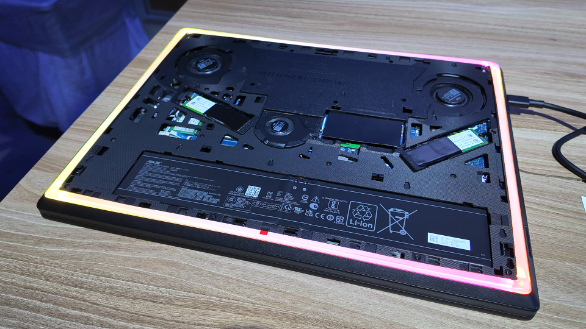
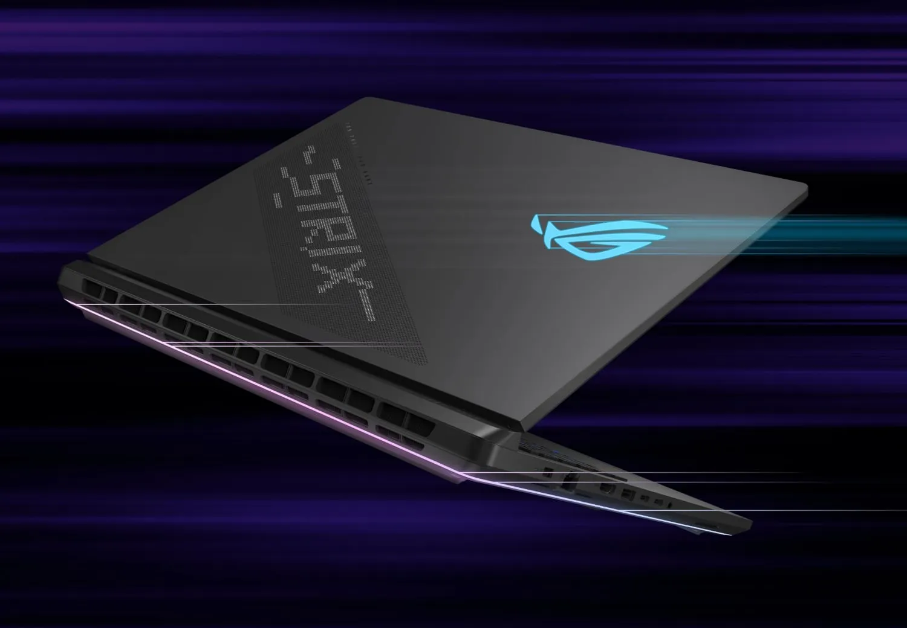

The Asus ROG Strix Scar 18 with Nvidia GeForce RTX 5070 Ti is a flagship gaming laptop that pushes the boundaries of mobile performance. Launched as part of the 2025 lineup, this 18-inch beast combines cutting-edge hardware with a premium design, targeting gamers and content creators who demand uncompromising power. With a starting price of $2,699, it’s a significant investment, but does it deliver enough to justify the cost? This review dives into its performance, display, design, and more to help you decide.
Specifications
| Component | Details |
|---|---|
| Processor | Intel Core Ultra 9 275HX |
| GPU | Nvidia GeForce RTX 5070 Ti |
| RAM | 16GB (upgradable, supports up to 64GB DDR5 5600MHz) |
| Storage | 1TB M.2 NVMe PCIe 4.0 SSD (upgradable, supports up to 4TB) |
| Display | 18-inch, 2.5K (2560x1600), 16:10, mini-LED, 240Hz, 1,200 nits peak HDR |
| Cooling | Triple-fan system with vapor chamber, Conductonaut Extreme liquid metal |
| Operating System | Windows 11 Pro |
| Connectivity | 2x Thunderbolt 5, USB 3.2 Gen 2 Type-C, USB 3.2 Gen 2 Type-A, HDMI, WiFi 6E |
| Battery | 90Wh |
| Price | Starting at $2,699 |
The Asus ROG Strix Scar 18 boasts a premium build quality, characteristic of the ROG lineup. Constructed from high-quality materials, it feels sturdy and durable, capable of withstanding the rigors of frequent transport. The design is sleek yet bold, with customizable RGB lighting on the keyboard, chassis, and logo, appealing to gamers who love a flashy aesthetic.
 The keyboard is a standout, offering comfortable key travel and responsive switches, suitable for both gaming and extended typing. The large trackpad is precise and supports multi-touch gestures, though most gamers will likely use an external mouse. The inclusion of two Thunderbolt 5 ports is a forward-thinking addition, providing ultra-fast data transfer and connectivity for external devices.
One of the most practical features is the laptop’s upgradability. The RAM and SSD slots are easily accessible, supporting up to 64GB of DDR5 5600MHz RAM (upgradable to 6400MHz) and 4TB of PCIe 4.0 storage, with future compatibility for PCIe Gen 5 SSDs (ASUS). This makes the Strix Scar 18 a future-proof investment for users who plan to upgrade over time.
The 18-inch 2.5K (2560x1600) mini-LED display is a highlight of the Strix Scar 18. With a 240Hz refresh rate, 3ms response time, and 1,200 nits peak HDR brightness, it offers an immersive experience for gaming and media consumption. The mini-LED technology provides over 2,000 dimming zones, resulting in deep blacks and excellent contrast, rivaling OLED panels in quality (ASUS). The display covers 100% of the DCI-P3 color gamut, making it ideal for content creators who need accurate colors.
The 16:10 aspect ratio provides extra vertical space, enhancing productivity for tasks like coding or video editing. For gamers, the high refresh rate ensures smooth visuals in fast-paced titles, while G-SYNC support eliminates screen tearing. Whether you’re playing competitive shooters or enjoying cinematic single-player games, this display delivers a top-notch experience.
At the core of the Asus ROG Strix Scar 18 is the Intel Core Ultra 9 275HX, a high-performance mobile processor designed for demanding workloads. With excellent single-threaded and multi-threaded performance, it handles everything from gaming to video editing and 3D rendering with ease. Paired with the Nvidia GeForce RTX 5070 Ti, this laptop is built to tackle the latest AAA games at high settings.
The RTX 5070 Ti is a significant step up from its predecessors, offering 16GB of GDDR7 memory with a 256-bit interface and 896 GB/s bandwidth, a 33% improvement over the RTX 4070 Ti Super (Tom's Hardware). Its compute performance includes 43.9 TFLOPS FP32 and 352 TFLOPS FP16 (up to 1406 TFLOPS with FP4), making it capable of handling advanced AI tasks and ray-traced games. The GPU supports DLSS 4 with multi-frame generation (MFG), which can boost frame rates by 50-80% in supported titles, though the perceived improvement may vary.
In practical terms, the RTX 5070 Ti excels at 1440p gaming, delivering high frame rates in titles like Cyberpunk 2077 and Call of Duty: Black Ops 6. For 4K gaming, DLSS 4 and upscaling ensure smooth performance, though it’s not as powerful as the RTX 5090 found in higher-end configurations. For content creators, the GPU’s capabilities make it suitable for video editing in Adobe Premiere Pro, 3D modeling in Blender, and other resource-intensive tasks.
To manage the heat generated by its high-performance components, the Strix Scar 18 employs a sophisticated cooling system featuring three fans, a vapor chamber, and Conductonaut Extreme liquid metal on both the CPU and GPU. This setup effectively keeps temperatures in check, even during intense gaming sessions, ensuring consistent performance without thermal throttling.
However, the cooling system is notably loud, especially in Turbo or Manual modes, where the GPU can consume up to 175W and the CPU up to 80W, for a total system power of 255W (ASUS). This noise level may be a drawback for users who prefer a quieter environment or plan to use the laptop in shared spaces. The trade-off for such high performance is understandable, but it’s a point to consider.
As with most high-performance gaming laptops, battery life is a weak point. The 90Wh battery struggles to keep up with the power-hungry 18-inch display and high-end components. Under heavy loads like gaming, the battery may last only an hour or two, requiring the laptop to be plugged in for extended sessions. For lighter tasks such as web browsing or document editing, it might last a few hours, but this is not a device designed for all-day unplugged use.
Armoury Crate is your command center for performance modes, RGB tweaks, and fan curves. It's powerful but bloated, with overlapping options that can confuse. Advanced Optimus handles GPU switching well, though I had to nudge a few apps to use the discrete GPU. As a Copilot+ PC, the G16's NPU enables slick AI tricks—real-time transcription, video enhancements—but gamers won't care much. The ecosystem feels polished, yet I wish ASUS streamlined the software.
The Asus ROG Strix Scar 18 with RTX 5070 Ti is a formidable gaming laptop that excels in performance, display quality, and build. Its Intel Core Ultra 9 275HX processor and RTX 5070 Ti GPU make it capable of running the latest games at high settings and handling demanding creative tasks with ease. The 18-inch 2.5K mini-LED display is a standout, offering vibrant visuals and smooth gameplay, while the upgradable design ensures longevity.
However, the laptop’s high price, loud cooling system, and limited battery life are notable drawbacks. The base 16GB RAM configuration may also feel restrictive for some, particularly when paired with a GPU boasting 16GB VRAM. For serious gamers and content creators who can afford the premium and don’t mind the noise, the Strix Scar 18 is a worthy choice that delivers on its promise of top-tier performance.
The Asus ROG Strix Scar 18 with RTX 5070 Ti earns an 8.5/10. It excels in performance, display quality, and build, making it a top choice for gamers and content creators. The Intel Core Ultra 9 275HX and RTX 5070 Ti deliver outstanding gaming and productivity capabilities, while the 18-inch 2.5K mini-LED display offers vibrant visuals and smooth gameplay. Its premium design and upgradability add to its appeal. However, the high price ($2,699 starting), loud cooling system, limited battery life, and base 16GB RAM slightly temper its overall value, preventing a higher score.
Comment Section